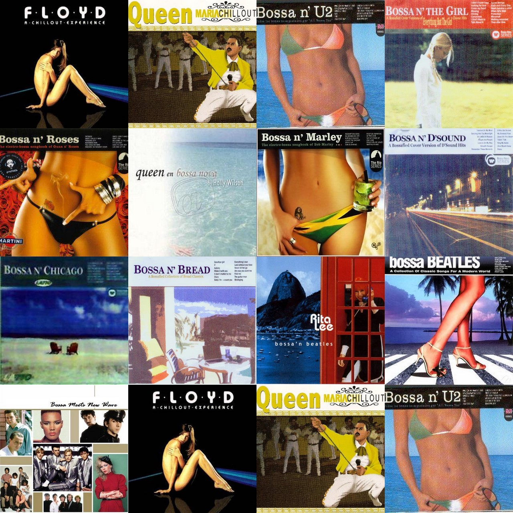

POSTS
[Bossa Nova]Beat It ( Cris Delanno )
Michael Jackson In Bossanova
에 수록된 Beat It ( Cris Delanno ) 입니다.
유명한 밴드, 가수 곡들을 보사노바로 편곡한 앨범들이 많습니다.
“Bossa n’ 어쩌구 “
시리즈가 대표적인데요.

가끔 보사노바와 전혀 어울리지 않는 억지스런 리메이크도 있지만
원곡이 보사노바였지 않을까 착각할 정도로 잘 편곡된 곡들도 많습니다.
2009년 7월에 한국에서 발매된 Michael Jackson In Bossanova는 Bossa n’ 시리즈와는 관련은 없지만
같은 기획의도로 제작된 앨범인 듯 합니다.
수록곡 중 가장 보사스럽다고 생각되는 Beat it 입니다.